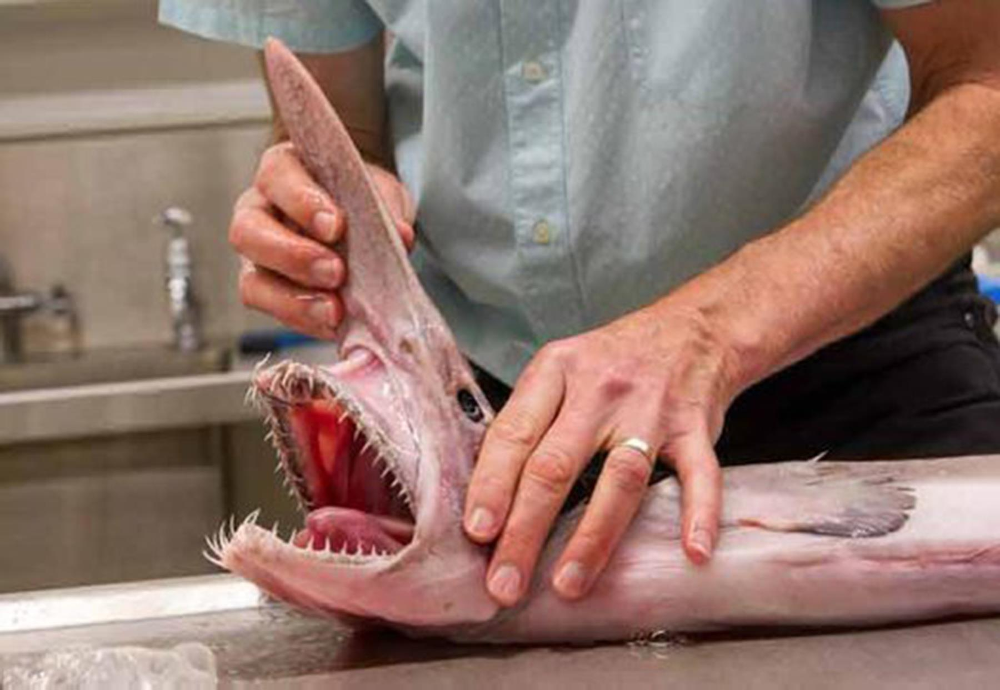
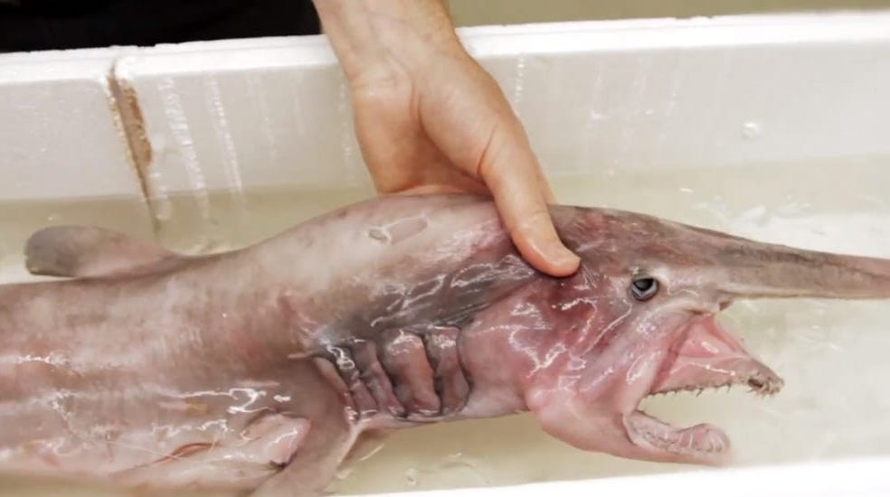

HUMAN INTERACTION
The first known findings pertaining to the goblin shark were published in 1910, and the researcher wrote that, "the new shark is certainly grotesque," and that, "the most remarkable feature is the curiously elongated nose." Given the depths at which it lives, the goblin shark poses little danger to humans. A few specimens have been collected alive and brought to public aquariums, though they only survived briefly. One was kept at Tokai University and lived for a week, while another was kept at Tokyo Sea Life Park and lived for two days. Its economic significance is minimal; the meat may be dried and salted, while the jaws fetch high prices from collectors. At one time, the Japanese also used it for liver oil and fertilizer.
This shark is not targeted by any fisheries, but is occasionally found as bycatch in bottom gillnets and trawls, hooked on longlines, or entangled in fishing gear. Most captures are isolated incidents; one of the few areas where it is caught regularly is off southern Japan, where around 30 individuals (mostly juveniles) are taken each year. A black scabbardfish (Aphanopus carbo) fishery off Madeira also takes two or three goblin sharks annually. During April 2003, more than a hundred goblin sharks were caught off northwestern Taiwan; the cause of the event was unknown, though observers noted it was preceded by a major earthquake. The species had never been recorded in the area before, nor has it been found in such numbers since.
The International Union for Conservation of Nature (IUCN) has categorized the goblin shark as Least Concern. In addition to its wide range, most of its population is thought to reside in unfished environments because few adults are caught. Therefore, it is not believed to be threatened by human activity. However, during June 2018 the New Zealand Department of Conservation classified the goblin shark as "At Risk – Naturally Uncommon" with the qualifiers "Data Poor" and "Secure Overseas" using the New Zealand Threat Classification System.